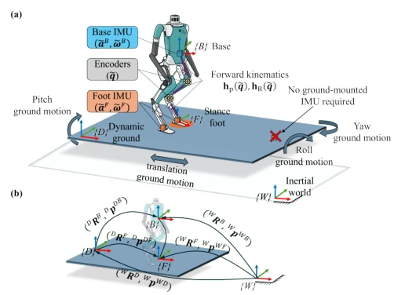
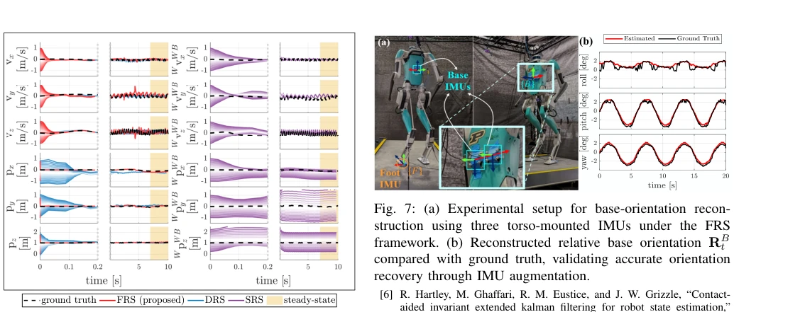
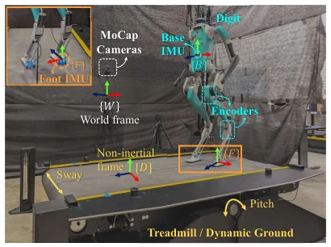
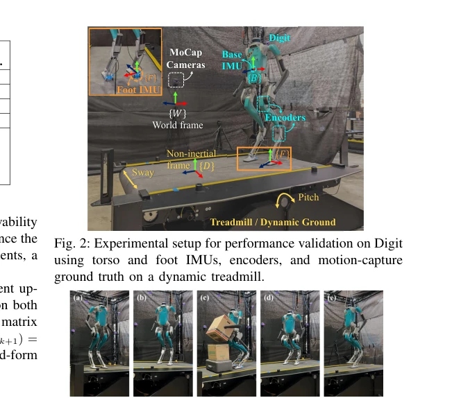
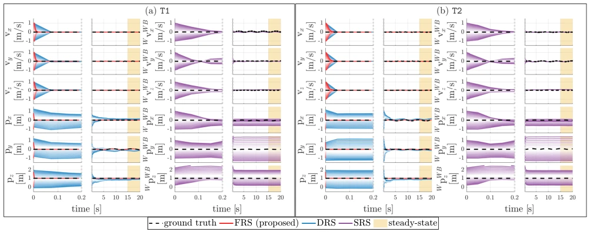
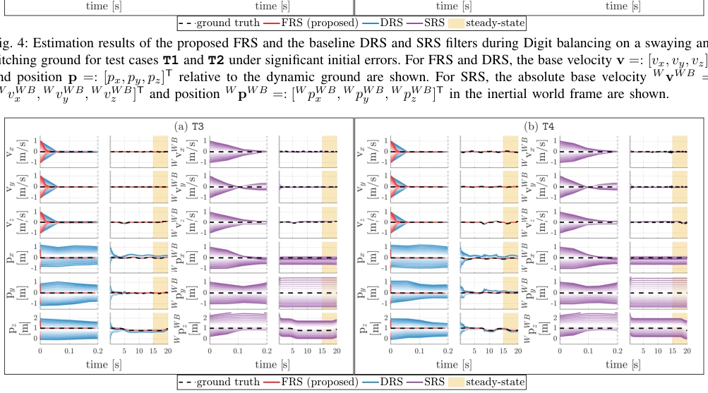
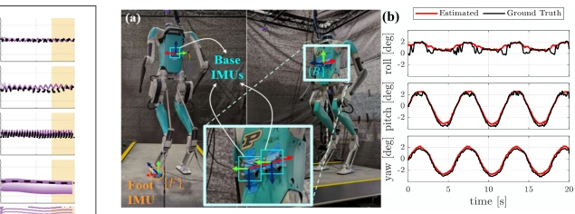

This paper finally ceases to pretend the floor is stationary, adapting InEKF to a shaking deck. The highlight lies in inferring ground motion using only proprioception (foot IMU), eliminating the need for expensive ground sensors. However, the authors' claim regarding "full state observability" is somewhat conservative; base orientation still requires additional IMUs to be recovered, otherwise the yaw axis remains unobservable. Experiments were conducted on Digit, where convergence speed is indeed fast, but handling impact noise during walking still relies on filtering, not fully resolved theoretically. Overall, it is a practical engineering improvement, though theoretical "perfection" requires some discounting.
Existing state estimation for legged robots mostly relies on static ground assumptions [1], [4], failing once encountering moving platforms (e.g., ships, cars). Although InEKF [5] improves accuracy, when handling non-inertial environments, it either assumes known ground absolute pose [8] or relies on external ground IMU [9], which is unrealistic for field deployment. Learning-based methods [19], [20] have questionable generalization. This paper aims to solve non-inertial ground state estimation without external sensing, which is crucial for locomotion planning, as task definitions are typically relative to moving environments rather than inertial frames.

Fig. 1: (a) Humanoid robot walking on non-inertial ground with onboard proprioceptive sensors (torso and foot IMUs and joint encoders); no ground-mounted sensors are required. (b) Reference frames and state variables used for state estimation.
The core is designing an InEKF relative to a dynamic ground frame. State variables are defined as the base pose and velocity relative to the ground. The process model utilizes foot IMU data, solving for ground acceleration and angular velocity through foot contact kinematic constraints (d/dt(dt)=0), thereby eliminating dependence on ground sensors. The measurement model adopts a right-invariant observation form, utilizing leg odometry, ensuring error dynamics linearization. For discrete contact switching, a state jump update is designed. Additionally, through observability analysis, it is pointed out that base orientation is unobservable, proposing a scheme to add three non-collinear IMUs on the torso to recover orientation observability.

Fig. 6: Estimation results of the proposed FRS and the baseline DRS and SRS filters during Digit walking on a pitching ground for test case T5 under significant initial errors. The notational conversion follows Fig. 4.
Conducted on the Agility Digit robot, using a dynamic treadmill to simulate rolling and pitching motions. Comparison baselines include the static assumption SRS [6] and the ground IMU-required DRS [9]. Metrics are convergence speed and position error. Results show FRS convergence speed improved by 96%, and position error reduced by 80%. In walking experiments, when initial error is 1m, final error is less than 9cm. Orientation recovery experiments verified the multi-IMU scheme is effective. However, under walking impacts, speed estimation still exhibits jitter, requiring additional filtering processing.

Fig. 2: Experimental setup for performance validation on Digit using torso and foot IMUs, encoders, and motion-capture ground truth on a dynamic treadmill.

Fig. 3: Snapshots of Digit operating on a moving treadmill under five representative test cases: (a) Case T1: standing with a 90° heading relative to the treadmill; (b) Case T2: standing with a 45° heading; (c) Case T3: box picking and placing; (d) Case T4: squatting; and (e) Case T5: walking.

Fig. 4: Estimation results of the proposed FRS and the baseline DRS and SRS filters during Digit balancing on a swaying and pitching ground for test cases T1 and T2 under significant initial errors. For FRS and DRS, the base velocity v =: [vx, vy, vz]T

Fig. 5: Estimation results of the proposed FRS and the baseline DRS and SRS filters during Digit squatting on a pitching ground (i.e., under test cases T3 and T4) under significant initial errors. The notational convention follows Fig. 4.

Fig. 7: (a) Experimental setup for base-orientation recon- struction using three torso-mounted IMUs under the FRS framework. (b) Reconstructed relative base orientation RB t compared with ground truth, validating accurate orientation recovery through IMU augmentation.